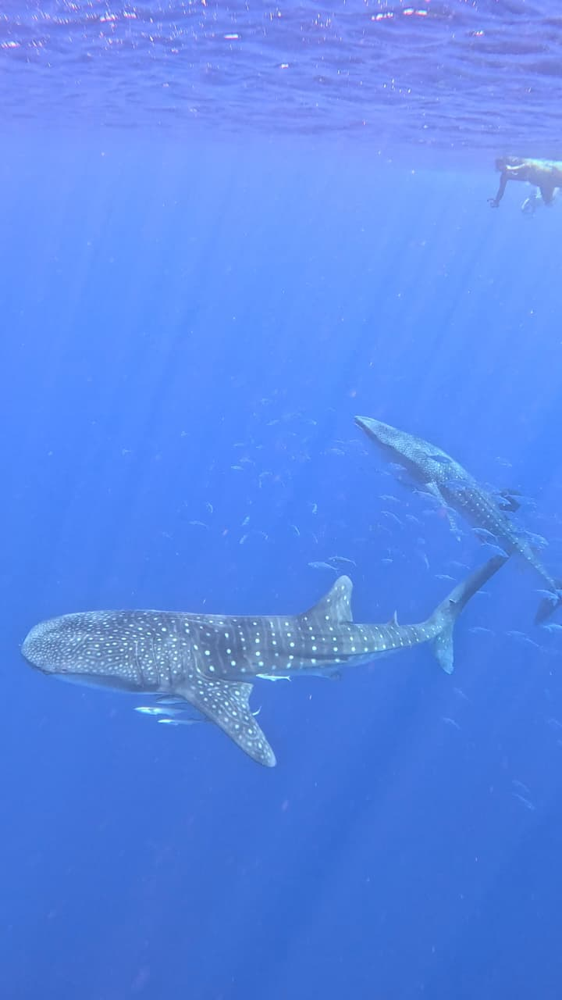

Willkommen im Tauchzentrum Rotes Meer
Erleben Sie die besten Tauchausflüge, Korallenriffe und Bootsausflüge in Hurghada.

Unsere Angebote & Kurse:
- Tägliche Tauchausflüge (Daily Diving)
- Open Water Diver Tauchkurse
- Schnorchel- & Inselausflüge
- Wracktauchen & Spezielle Safaris
Buchen Sie Ihren Ausflug:
Klicken Sie unten, um uns direkt über WhatsApp zu kontaktieren:
Über WhatsApp buchen